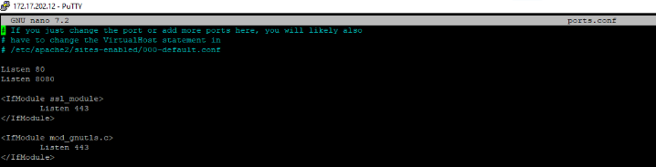

ls
- cela apparetra - sert à lister les fichiers et répertoires d'un répertoire donné. Et voir si on a bien créé.
Site1 Sites2

A faire un nano ect/network/interfaces .
- nano est un éditeur de texte simple et léger en ligne de commande.et d'ouvrir le fichier de configuration réseau situé à l'emplacement /etc/network/interfaces.

Aller dernier texte par exemple iface ens18 inet dhcp
- Cette commende ouvre un fichier de configuration.

Ajouter #
- vous ajoutez un # au début d'une ligne, cela a pour effet de commenter cette ligne.

Puis ajouter iface ens18 inet static
- La ligne iface ens18 inet static dans un fichier de configuration réseau (comme /etc/network/interfaces sur Debian) spécifie qu’une interface réseau nommée ens18 doit être configurée avec une adresse IP statique.

mettre l'adresse ip adress 172.17.202.12/16 et gateway 172.17.0.254
- Pour configurer une interface réseau avec l'adresse IP 172.17.202.12/16 et la passerelle 172.17.0.254 en utilisant nano.

Faire un nano /etc/resolv.conf
Mettre nameserver 172.17.10.1 et nameserver 172.17.10.2
- nano est un éditeur de texte simple et léger en ligne de commande.et d'ouvrir le fichier de configuration réseau situé à l'emplacement /etc/network/interfaces

- A la fin de /etc/network/interfaces nous attendons ce résultat.

Puis en dehors de nano faite cat /etc/resolv.conf
- La commande cat /etc/resolv.conf affiche le contenu du fichier /etc/resolv.conf. Ce fichier est utilisé par le système pour configurer les serveurs DNS, qui traduisent les noms de domaine en adresses IP.

cat /etc/network/interfaces
- Cela a la commande cat /etc/network/interfaces dans un système Debian affiche le contenu du fichier de configuration réseau `/etc/network/interfaces`.

reboot
- La commande reboot sur Debian redémarre le système.

Faire un apt update
- Cette commande pour mettre à jour l'index des paquets disponibles dans les dépôts logiciels configurés.

Faire systemc1 statu s apache2
- systemctl status apache2 (notez la correction dans le nom de la commande, c'est systemctl et non systemc1) permet d'afficher le statut du service Apache2, le serveur web populaire sur les systèmes comme debian.

- Puis aller dans un Edge/Firefox/Google Chrome, puis mettre dans la barre de recherche votre adresse IP. Vous aurez une page qui apparaîtra. Sur l'image l'adresse ip que j'utilise est 172.17.202.12

Aller dans PuTTY puis marquer dans la commende cd /var/www/html
- pour se déplacer dans un répertoire spécifique sur un serveur distant.
Puis faite ls -l
- C'est pour Afficher une liste détaillée des fichiers et répertoires dans le répertoire courant.

Faire nano index.html.
- nano est un éditeur de texte simple et léger en ligne de commande.et d'ouvrir le fichier de configuration réseau situé à l'emplacement index.html
- Vous pouvez faire les modifications dans HTML et CSS. Par exemple dans je met "Salut tout le monde"


Faire un ls
- sert à lister les fichiers et répertoires d'un répertoire donné. Et voir si on a bien créé.
Faite un cd afin d'enlever" /var/www/html"
- Puis mettez cd /etc/apache2
Faite un ls -l
- C'est pour Afficher une liste détaillée des fichiers et répertoires dans le répertoire courant.

ip addr add 127.17.202.112/16 dev ens18 label ens18:0 afin de mettre la page "HTML et CSS"
Faire un ip a
- C'est pour Afficher une liste détaillée des fichiers et répertoires dans le répertoire courant.
 Aller dans web mettez 172.17.202.112 et vous aurez la même chose que l'adresse ip 172.17.202.112 .
Aller dans web mettez 172.17.202.112 et vous aurez la même chose que l'adresse ip 172.17.202.112 .
a2query -s
- Il est spécifique aux systèmes Debian et fait partie des outils liés à Apache2, le serveur web populaire.

ls -l
- C'est pour Afficher une liste détaillée des fichiers et répertoires dans le répertoire courant.
cat 000-default.conf
- La commande cat 000-default.conf est utilisée pour afficher le contenu du fichier 000-default.conf, qui est un fichier de configuration d'Apache2.
ls -m
- La commande ls -m dans un terminal est utilisée pour lister les fichiers et répertoires dans le répertoire courant, mais avec une particularité : elle affiche les résultats sous forme de liste séparée par des virgules.

ls
- cela apparetra - sert à lister les fichiers et répertoires d'un répertoire donné. Et voir si on a bien créé.
Site1 Sites2
La suite de l'étape pour activer le virtual host

Mettez a2query -s
- utilisée dans les systèmes Debian et Ubuntu pour interroger le statut des modules Apache2.
Faire a2dissite ip_vhosts
- La commande cat 000-default.conf est utilisée pour afficher le contenu du fichier 000-default.conf , qui est un fichier de configuration d'Apache2.

systemctl reload apache2
- La commande systemctl reload apache2 est utilisée pour recharger la configuration du serveur web Apache2 sans redémarrer complètement le service.

cat index.html
- La commande cat index.html dans un terminal Unix ou Linux affiche le contenu du fichier index.html dans le terminal.
cd /etc/apache2/sites-available/
- La commande cd permet de changer le répertoire courant vers le répertoire /etc/apache2/sites-available/ sur un système Linux (comme Debian ), où sont stockées les configurations des sites pour le serveur web Apache2.

ls -l
- C'est pour Afficher une liste détaillée des fichiers et répertoires dans le répertoire courant.
cp ip_vhosts.conf port_vhosts.conf
- La commande cp ip_vhosts.conf port_vhosts.conf est utilisée pour copier un fichier sur un autre fichier ou répertoire dans un système
ls -s
- La commande ls -s est utilisée pour afficher la taille des fichiers et des répertoires dans le répertoire courant ou spécifié.
nano port_vhosts.conf
- nano est un éditeur de texte simple et léger en ligne de commande.et d'ouvrir le fichier de configuration réseau situé à l'emplacement port_vhosts

- Vous arrivez dans une page ou vous devrez modfier l'adresse ip

:8080
- Veillez mettre dans l"adresse ip. Le port :8080 fait référence à un numéro de port utilisé dans les adresses URL ou les configurations réseau pour indiquer une connexion au serveur via ce port spécifique.

ls l
- C'est pour Afficher une liste détaillée des fichiers et répertoires dans le répertoire courant.
cd
- La commande cd est utilisée dans les systèmes debian et linux pour changer le répertoire de travail courant dans le terminal.

Faire un /var/www/html/site1/index.html
- nano est un éditeur de texte simple et léger en ligne de commande.et d'ouvrir le fichier de configuration réseau situé à l'emplacement /var/wwww/html/site1/index.html

- Mettre un mot 'title' dans et dans 'h1' afin de voir si cela fonctionne la modification

Faire un nano /var/www/html/site2/index.html
- nano est un éditeur de texte simple et léger en ligne de commande et d'ouvrir le fichier de configuration réseau situé à l'emplacement /var/www/html/site2/index.html
- Mettre un mot 'title' dans et dans 'h1' afin de voir si cela fonctionne la modification

a2query -s
- La commende est a2query -s utilisée pour vérifier le statut des modules Apache2 activés ou désactivés sur un système basé sur Debian ou Ubuntu

a2ensite port_vhosts
- utilisée pour activer un site Apache sur un système debian qui utilise Apache2
systemctl reload apache2
- La commande systemctl reload apache2 est utilisée pour recharger la configuration du serveur Apache2 sans arrêter complètement le service. Cela permet de prendre en compte les modifications effectuées dans les fichiers de configuration d'Apache sans perturber les connexions en cours.

On attend de ce résultat sur la page web avec l'adresse IP
Puis dans Putty faire un cd /etc/apache2 ensuite nano ports.conf

Faire la même chose ci-dessous de l'image
systemctl reload apache2
Mettre dans la barre de recherche 127.17.202.8080

Mettre dans la barre de recherche 127.17.202.12
systemctl reload apache2

cd sites-available
Faire un ls -l

cp port_vhosts.conf name_vhosts
Faire un nano name_vhosts.conf

Puis, arrivé sur nano, vous allez enlever l'adresse IP sauf : 80 et mettre * sur les deux adresses IP

Faire un ls -l afin de voir si la configuration a été prise en compte

a2ensite name_vhosts.conf
Systemctl reload apache2

Si vous allez à la barre de recherche mettez Site1.mortier.local la page ne fonctionnera pas. Pour la faire fonctionner suivez les étapes ci-dessous

Aller dans Disque local puis Windows system32 drivers et etc

Ouvrir un bloc note afin de modifier. Mettre un nom à côté de l'adresse IP

Mettre site 1.mortier/local dans la barre de recherche

Mettre site 2.mortier/local dans la barre de recherche